HAM FAIR 2006
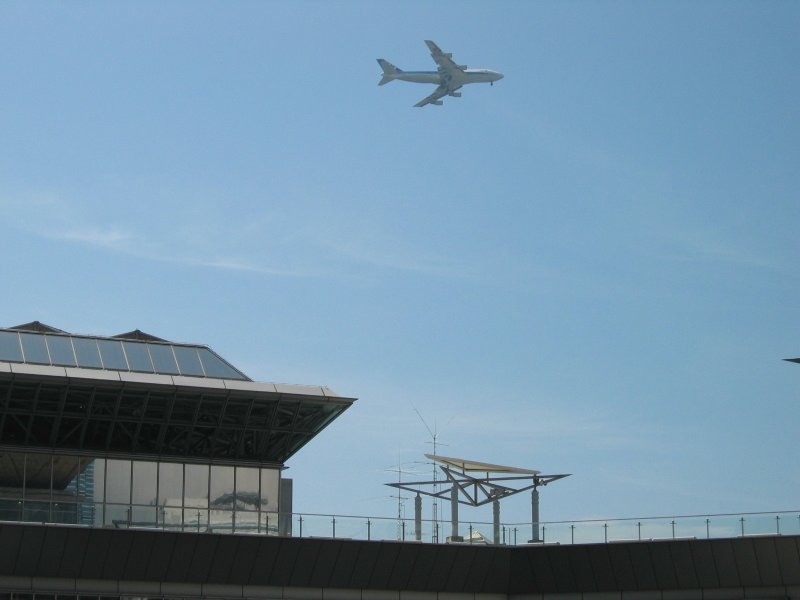
2006年 ハムフェア in 東京ビッグサイト
|
◎ Ham Fair 2006 開催 「ハムフェア2006」が8月19日(土)、20日(日)の両日、東京有明の東京ビッグサイト・西2ホールで開催された。 今年のキャッチフレーズは「ハムフェア楽しさ見つけて30年」。 30回を迎えたハムフェアの開催の足跡やアマチュア無線家が残した楽しい思い出やイベントの記録、写真などが展示された。 クラブコーナーには多くのハムが早朝から詰めかけ賑わっていた。 |
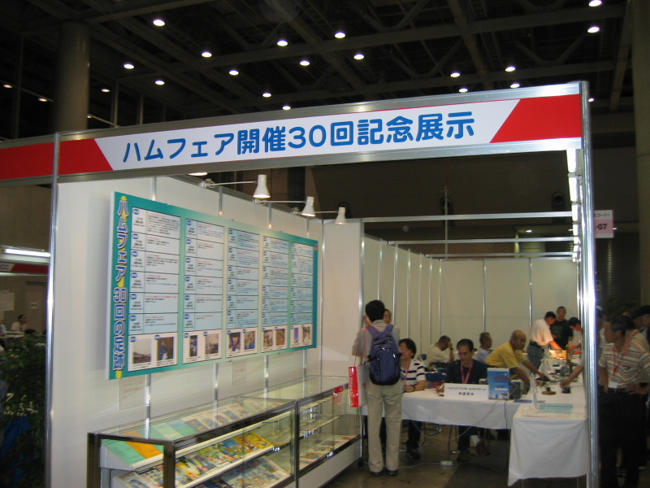
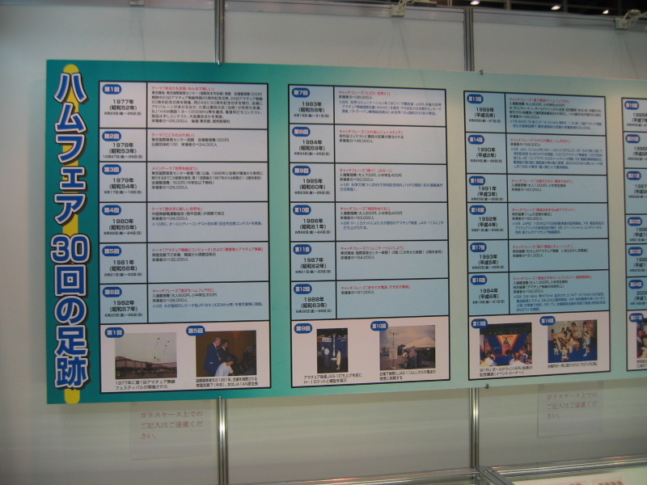
30周年を記念して思い出やイベントの記録、写真などが展示された
|
例年通り今年もJARLコーナーにはARRL(アメリカのアマチュア無線連盟)のDXCC申請受付デスクが設けられ、
ARRLからN7NG(ウエイン・ミルズ氏)が来日、
JARLのフィールドチェッカーと供にフィールドチェックが行われた。
フィールドチェックは17日(木)、18日(金)(10:00-15:00)の両日にも巣鴨のJARL事務局でもおこなわれたが、
今回はDXCCの336番目の新エンティティーに追加されたYU6・モンテネグロ(MONTENEGRO)の申請や、
50MHzのEUのオープンでNEWを増やした局が殺到して初日から賑わっていた。 大手の無線機器メーカーの各コーナーでは、バーテックススタンダード(YAESU)社が先に行われたKH8SIのDX-Peditionのビデオと供に、 昨年のハムフェアで試作品が展示されていた"新製品"のFT-2000を展示、運用体験コーナーも設けられて賑わっていた。 I-COMは同社の最高機種のIC-7800、KENWOODがTS-400/TS-2000シリーズを展示していた程度で、 期待された新製品の発表は見当たらなかった。 昨年までJARL主催の「アイボールQSOパーティー」と「JAPAN DX Meeting」は合同開催されていたが、 今年は再び単独開催となった。 JARL発表によると今年の来場者は昨年並みの延べ29,000人だった。 |
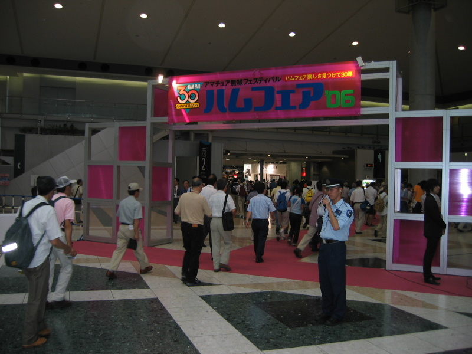
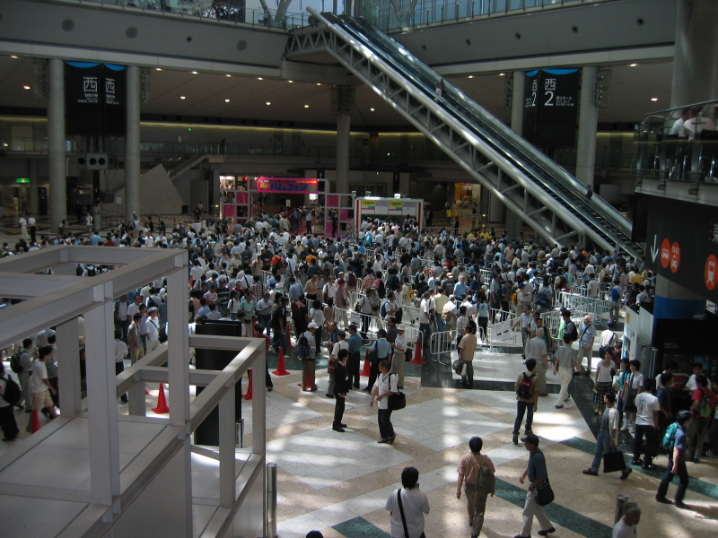
初日に詰め掛けた入場者。
Event corner
◎ ハムフェア2006・プログラム
8/19(土) 11:00 ＝30回記念イベント＝「あつまれヤングハム」スピーチコンテスト 12:00 「南極昭和基地からの初めてのアマチュア無線運用」作間敏夫(ex JA1JG) 13:00 「アマチュア無線落語」笑福亭瓶太 14:00 JAIAタイム(JAIA技術委員会・アイコム株式会社・景山 寛) 15:00 表彰式・自作品コンテスト、絵画コンクール、スピーチコンテスト(総務省/JARL) 8/20(日) 11:00 「ARDFの楽しみ方」JR0AIJ・新井喜雄(JARL・ARDF委員) 12:00 「八木博士が研究した八木アンテナのしくみ」(八木アンテナ株式会社設計部長・坂内功治) 13:00 「DXCCとLoTWについて」ARRL・N7NG Wayne Mills (Manegere Manbership Department ARRL) 14:00 JAIAタイム 普及委員会 (講演者・アイコム株式会社・桜井紀桂) D-STAR パート3 15:00 表彰式・関東UHFコンテスト(JARL関東地方本部) |
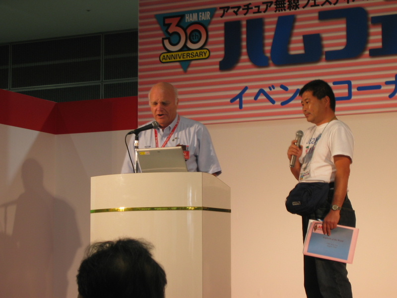
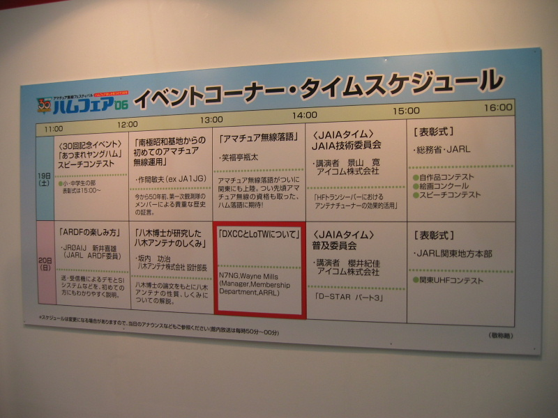
DXCCとLoTWについて講演するN7NG・Wayne Millis氏。通訳はJE2FHP
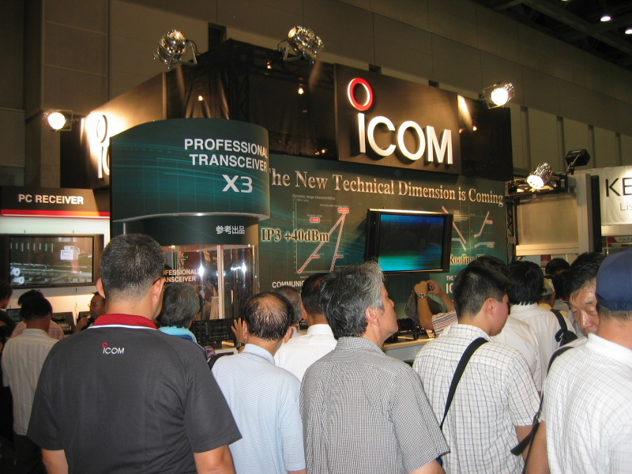
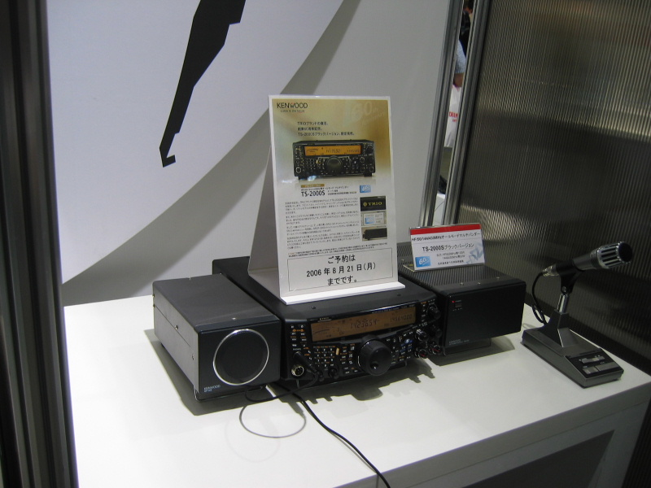
I-COMのブースは今年もIC-7800がメイン/KENWOODのFT-2000シリーズ
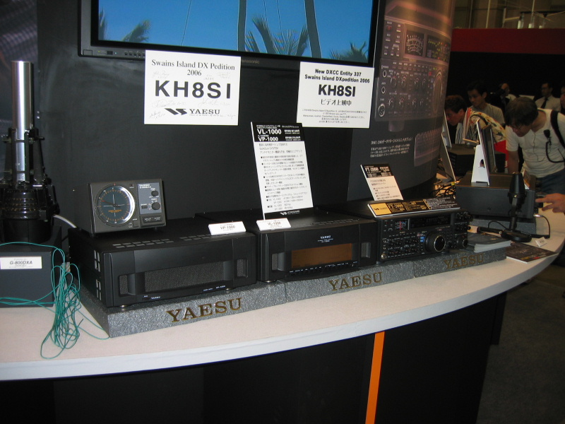
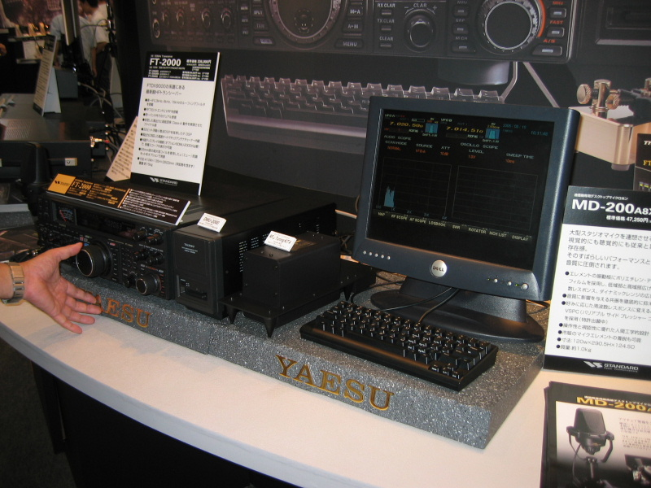
バーテックスタンダードの新製品・FT-2000は注目の的

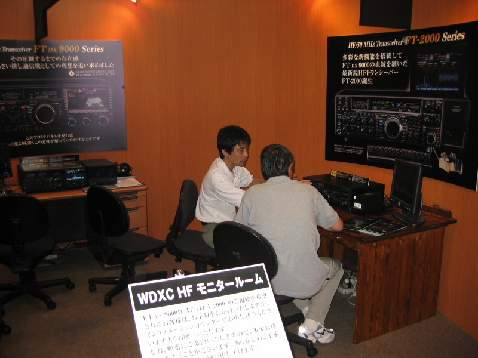
FT-2000の運用体験コーナー
8J1A
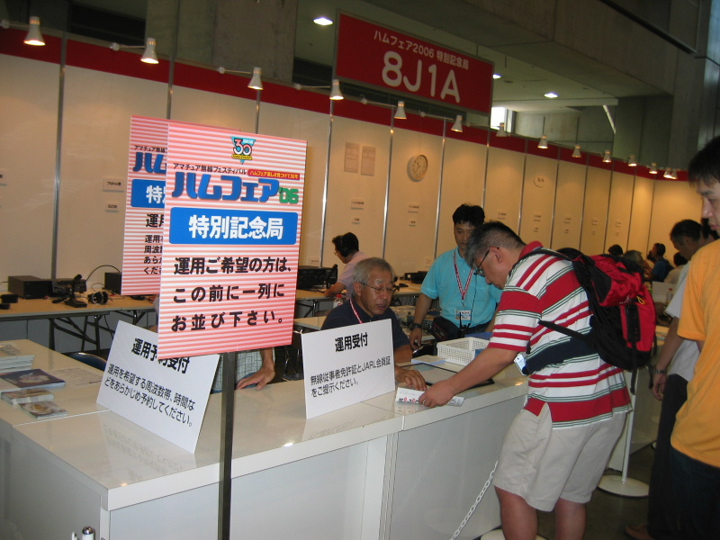
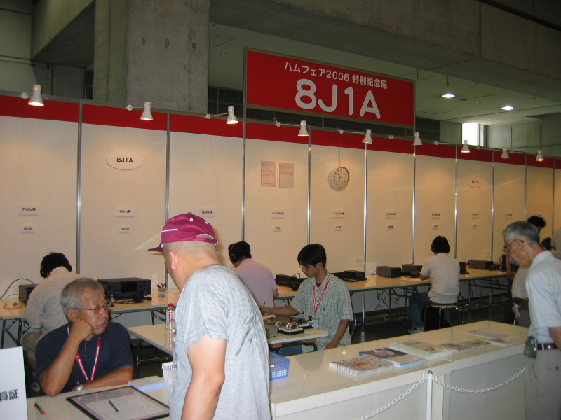
ハムフェア記念局・8J1A
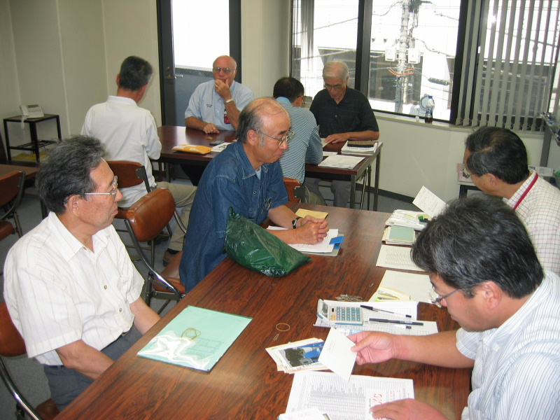

17-18日にJARL事務局で行われたDXCCフィールドチェック
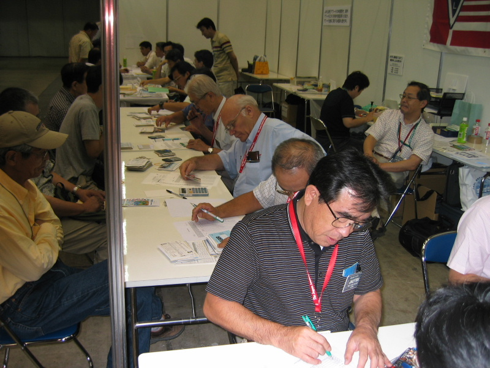
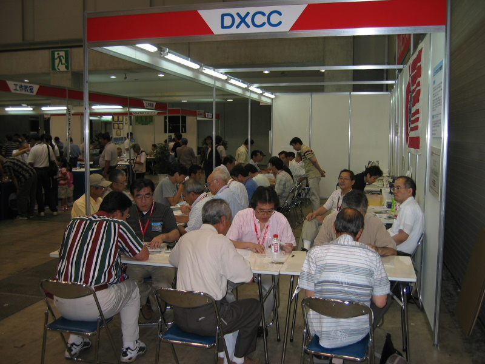
ハムフェア会場でのDXCCフィールドチェック
Ham Fair 2006
Ham Fair 2005
Ham Fair 2004
Ham Fair 2003
Ham Fair 2002
Ham Fair 2001
Ham Fair 2000
Ham Fair 1999
|
[ハムフェアの歴史] ハム・フェアの前身「第1回全日本ハムベンション」が1975年(昭和50年)、静岡県富士宮市で開催された。 会場は富士の裾野に広がる朝霧高原のグリンパーク。 1976年の第2回では特別記念局の8J2HAMも開局、交通の便は良くないものの自然を満喫出来る会場は多くの来場者で賑わった。 この実績を基礎に、1977年(昭和52年)「全日本ハムベンション」を引き継ぐ形で「第1回アマチュア無線フェスティバル」(ハムフェア)が、 JARLの主催で東京都中央区晴海の東京貿易センターで開催される事になった。 第1回は9月23日から25日までの開催期間にも関わらず、初日から多くの入場者がつめかけた。 フェスティバルの特別記念局・8J1HAMも開設、多くの来場者が運用した。 |